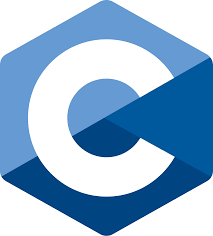
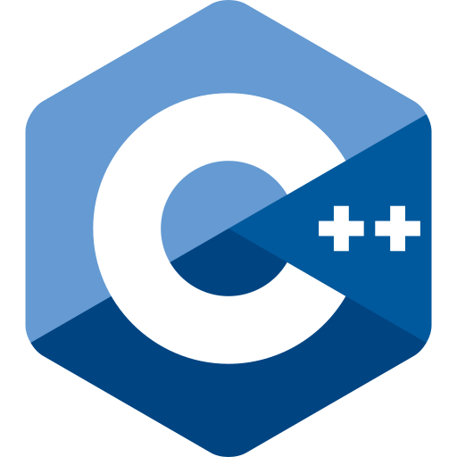
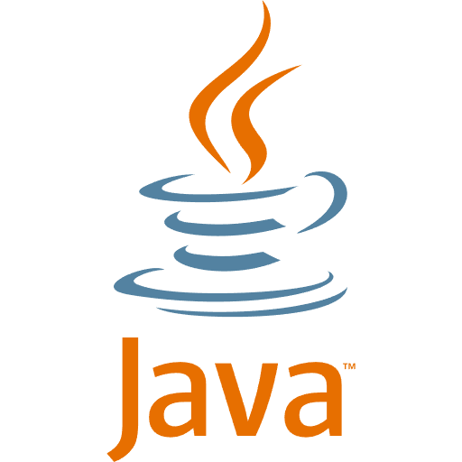
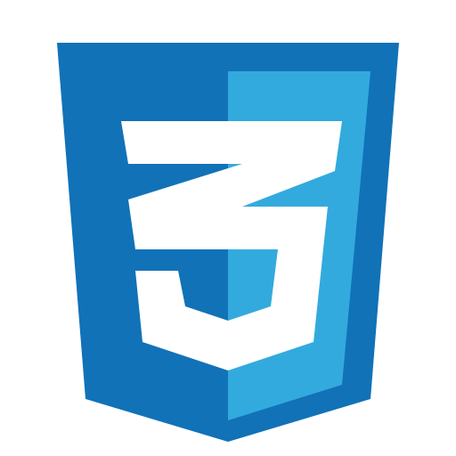
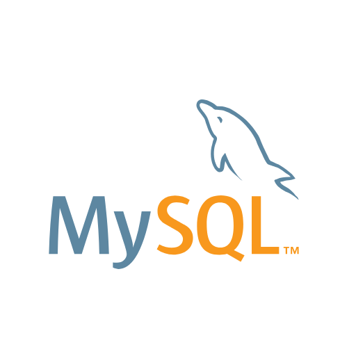

Web application
FoodHub
A food ordering website similar to FoodPanda or GrabFood, covering Cebu City only.
Aspiring Information Technology Professional
I design and build web systems, work with databases, and study how networks run. This portfolio presents my skills and the projects I completed during my degree.

This website serves as a consolidated, verifiable record of my technical education, practical projects, and professional direction. It substitutes unsupported claims with tangible evidence, allowing every reviewer to assess my work first-hand and decide with confidence.
A coherent overview of my background, competencies, and completed work. Each page is structured for effortless navigation on any device, placing relevant information within a single click.
Working systems illustrate how I convert a requirement into a functioning solution, from interface design to data handling. They provide a realistic basis for judging my diligence, reliability, and attention to detail.
A focused profile aligned with entry-level network administration roles, supported by documented projects and a downloadable resume. Recruiters can validate capability directly rather than infer it from a document alone.
Building responsive, database-driven websites and the interfaces people use.
Writing structured, maintainable programs in C, C++, C#, Java, and PHP.
Applying programming logic to interactive and gameplay-driven software.
Understanding how networks are configured, secured, and kept running.
I'm a fourth-year BSIT student at Cebu Eastern College, working toward a career in network administration. I learn best by building: every project I've completed has shown me how interfaces, databases, and data fit together.
Beyond networking, I enjoy web, software, and game development.
Read my full storySelect a panel to open it.

General-purpose language for system-level programming.

Object-oriented extension of C for software and games.
Object-oriented language for desktop software and games.

Object-oriented language for cross-platform apps.
Server-side language for database-driven websites.
Markup that gives web pages their structure.

Styling for layout, color, and responsive design.
Makes web pages interactive in the browser.

Relational database for storing and querying data.
How devices connect, communicate, and are managed.
Swipe or use the arrows. Select an image to enlarge it.
A food ordering website similar to FoodPanda or GrabFood, covering Cebu City only.
A news website sharing information about the conflict between the Philippines and China.
A digital logbook for the BSIT computer laboratory, replacing the handwritten sign-in sheet.
A website that retrieves student and teacher data through an API, converting it to JSON using GET and POST requests.